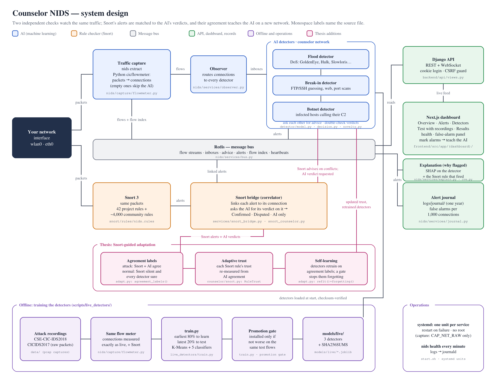
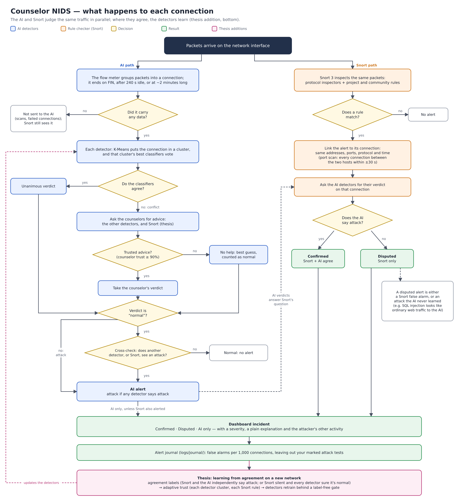

Counselor NIDS watches the traffic on a network interface and raises an alarm when a connection looks like an attack. It is built to solve a practical problem: machine-learning detectors that work in the lab usually fail once installed on a real organisation's network, and this system lets them adapt to that network by themselves, using a signature engine the organisation already runs. Two independent checks judge every connection:
Every Snort alert is linked to the connection it belongs to and compared with the AI's verdict on that connection, so each incident is reported as Confirmed (both agree), Disputed (Snort only) or AI only. A web dashboard shows the incidents, who is attacking, how the detectors reached their decisions, how many false alarms the system raises on the network over days, and whether every part of the system is running.
On real attack traffic it never trained on, the system catches 99-100% of most attack types, including floods, password guessing and botnet traffic, with almost no false alarms (Section 8). The thesis extension (Section 9) adds Snort as a counselor, self-learning from agreement between Snort and the AI, and adaptive trust, so the detectors can adapt to a network they were never trained on without anyone labelling its traffic.
The real-world problem: the deployment gap. Machine-learning intrusion detectors score almost perfectly on the dataset they were trained on, but lose most of that accuracy on a different network. Trained on CIC-IDS2017 and tested on CSE-CIC-IDS2018, published classifiers fall to about chance accuracy (Cantone et al., 2024) — a macro-F1 near 0.12. Every real deployment is a "different network", so in practice an organisation's new detector either misses real attacks or buries its security team in false alarms. This is the main reason AI-based detection is not trusted in the field.
A small company installs an ML-based IDS. In the vendor demo it caught 99% of attacks. On the company's own network it drowns its two-person security team in false alarms and misses a real intrusion. The company has no labelled data from its network and no ML specialists. Today their only realistic choice is to turn the ML off and trust Snort alone.
Two things make this hard to fix in the field, and both shape the design:
Almost every organisation already runs a signature engine (Snort), whose rules behave the same on every network. This project uses that existing, network-independent tool as a built-in teacher, so the detectors adapt to the organisation's own network on their own — no labelling, no ML expertise, no vendor.
To design, implement and evaluate a counselor-based network intrusion detection system in which a signature-based IDS (Snort) guides machine-learning detectors to adapt to a network they were never trained on, without labelled traffic from that network — so that the detector can be deployed on a new organisation's network and become accurate there automatically.
| Specific objective | The real-world challenge it addresses |
|---|---|
| 1. Snort as a counselor | In the counselors network, detectors only ask other AI detectors, who can share the same blind spots on a new network. Snort's signatures behave the same on any network, so they give independent advice — cutting the false alarms and missed attacks that overwhelm a small team. |
| 2. Learning from agreement | There are no labels on the new network. Connections where Snort and the AI independently agree serve as labels for free, so the detector recovers the accuracy lost to the deployment gap, and a safety gate blocks retraining that hurts or makes the detectors forget what they knew. |
| 3. Adaptive trust | Each counselor's trust is measured once, in the lab. It is re-estimated on the new network from how often the others agree with it — so rules that misfire on this network are down-weighted — for every Snort rule, and (tested as an ablation) for the AI detectors themselves. |
| 4. Cross-network evaluation | The mechanisms are evaluated by training on one lab (CSE-CIC-IDS2018) and deploying on another (CICIDS2017), in both directions, against each baseline — the evidence that adaptation to a genuinely unseen network is real, not the end in itself. |
| 5. Zero operator effort, run live | The operator labels nothing and needs no ML expertise: the system adapts itself and only asks for the occasional verdict. Research detectors rarely run on live traffic; this one does, and the practical obstacles found along the way are documented. |

| Service | Command | Role |
|---|---|---|
| Traffic capture (Extractor) | nids extract --live IFACE | Captures packets and turns them into connection records (flows) with the Python cicflowmeter. Flows that carry no data go to Snort only. Survives the interface going down and resumes on its own. |
| Observer | nids observe | Routes each batch of flows to every detector subscribed to that traffic source. |
| Detector (×3) | nids detect MODEL | Classifies flows, asks the other detectors (and,
with --snort-counselor, Snort) for advice, answers their requests, and publishes alerts. |
| Snort bridge | nids snort --interface IFACE | Runs Snort on the same interface, links each alert to its connection and asks the detectors for their verdict on it; makes Snort's advice available to unsure detectors and adapts each rule's trust. |
| Alert journal | nids journal | Keeps every alert on disk (one file per day) to measure false alarms over days. |
| Health | nids health | Every service sends a heartbeat; this lists them and exits with an error if any part has stopped. |
| API and dashboard | Django (Daphne), Next.js | REST and WebSocket API and the web dashboard. |
All services communicate through Redis streams:
nids:unknown (new flows), nids:inbox:<detector>, advice request and reply lists,
nids:alerts and nids:snort:alerts, a flow index (sorted sets keyed by connection and by host
pair), and a nids:health hash of heartbeats. Because each part is a separate process, any one can crash and
restart without stopping the others.
| Detector | Model file | Learned |
|---|---|---|
| Flood detector | models/live/live_dos.joblib | DoS GoldenEye, Hulk, Slowloris, SlowHTTPTest (and DDoS once the 2017 data is added) |
| Break-in detector | models/live/live_access.joblib | FTP and SSH password guessing, website attacks |
| Botnet detector | models/live/live_bot.joblib | Ares-infected hosts calling their command-and-control server |
Snort 3 runs on the same interface with the project's 42 rules (snort/rules/nids.rules) and the ~4,000
Snort 3 community rules. Each alert is linked to its connection: the same two addresses and ports, the same protocol,
and a time inside the connection's start-to-end window. A port-scan alert stands for many probes, so it is linked to
every connection between the two hosts within ±30 seconds. The detectors are then asked for their verdict on that
connection, using the same advice request they use with each other.
| Agreement | Meaning |
|---|---|
| Confirmed | Snort and the AI both say attack: very likely real. |
| Disputed | Snort says attack, the AI says normal: a possible Snort false alarm, or an attack the AI never learned (for example SQL injection, which looks like ordinary web traffic to the AI). |
| AI only | The AI flagged a connection Snort had no alert for: typically floods and botnet traffic. |
information_schema), cross-site scripting (<script, event handlers,
javascript:) in the URL or a form, and website login brute force (20 password posts from one source in
60 s).
Detectors trained on the published dataset CSVs caught 0% of password-guessing attacks measured the live way. The CSVs were made with the Java CICFlowMeter; live capture uses the Python cicflowmeter, and the two differ in 71 of 154 feature medians (packet lengths with or without headers, flag counting, where flows are split). So the detectors are trained on the datasets' raw packet recordings, measured by the same flow meter as live capture. This also means the known labelling errors in the CICIDS2017 CSVs (Engelen et al., 2021; Lanvin et al., 2023) do not reach training: flows are labelled from the packets and the published schedule, not the CSVs.
| Traffic | Test flows | Detected by the system |
|---|---|---|
| DoS SlowHTTPTest | 21,110 | 100.00% |
| DoS Hulk | 5,440 | 99.94% |
| FTP brute force | 4,416 | 100.00% |
| Botnet | 3,432 | 99.83% |
| DoS GoldenEye | 3,405 | 99.88% |
| DoS Slowloris | 2,166 | 84.53% |
| SSH brute force | 1,015 | 99.01% |
| Website attacks | 42 | 92.86% |
| Normal traffic (false alarms) | 5,192 | 0.04% (2 flows) |
| All attacks | 99.12% |
real-attacks-2018.pcap holds the final minutes of every attack, which the detectors never trained on,
plus normal office traffic. It runs through the flow meter, the detectors, Snort with the project's rules, and the
alert linking.
| Traffic | Flows | AI | Snort | Either |
|---|---|---|---|---|
| DoS GoldenEye | 1,822 | 99.1% | 4.9% | 99.1% |
| DoS Hulk | 2,861 | 99.9% | 48.2% | 99.9% |
| DoS SlowHTTPTest | 4,450 | 100.0% | 99.8% | 100.0% |
| DoS Slowloris | 760 | 34.7% | 0.0% | 34.7% |
| FTP brute force | 5,040 | 100.0% | 99.8% | 100.0% |
| SSH brute force | 359 | 98.3% | 88.9% | 98.9% |
| Website attacks | 4 | 4 of 4 | 4 of 4 | 4 of 4 |
| Botnet | 540 | 99.6% | 0.0% | 99.6% |
| Normal (false alarms) | 1,570 | 0.0% | 0.3% | 0.3% |
The two checks cover each other. The AI catches floods and the botnet that Snort's rules miss. Snort covers website attacks: on the whole 2018 website-attack capture it alerts on 188 of the attacker's 207 connections (90.8%) and on nothing else.
A botnet host it never saw: 99.8% of 15,238 botnet flows caught, with false alarms on 2 of 4,307 normal flows.
Slowloris is the weak spot, and the rate depends on the attack's phase: 85% across the attack, 60% over its complete last five minutes, 35% in the last three as the attack winds down. Snort's Challenge-ACK community rule lifts the last three minutes to 69.5%.
The counselors network now accepts advisors: counselors that give advice but classify nothing themselves. Snort is one. When a detector's classifiers disagree on a connection (a conflict), Snort's verdict on the same connection is advice like any other, worth the trust of the most trusted rule that fired. Snort only ever says "attack", and only on connections it alerted on: silence is not evidence of normal traffic, since Snort cannot see floods or botnets.
While the detectors watch a new network, each chunk of traffic produces agreement labels:
Everything else stays unlabelled. Each detector stays a specialist: it learns "attack" labels only for connections it was involved in (it said attack, or was unsure), and every detector learns the "normal" labels. A retrained detector replaces the old one only if:
No label from the new network is used.
scripts/live_detectors/adapt.py trains the detectors on one lab and streams the other lab's traffic
through the system in time order, in chunks. A fixed test set (the target's latest 20%) is scored before adaptation and
after every chunk. It compares:
| Configuration | Uses |
|---|---|
| Snort alone · AI or Snort | Baselines |
ai | The counselors network as deployed today |
+snort | + Snort as a counselor |
+rules | + Snort counselor and adaptive rule trust |
+self | Ablation: self-training with no Snort (labels from the AI's own confidence) — isolates whether the gain comes from Snort or just self-training |
+learn | + Snort counselor and learning from agreement |
full | The proposed system: Snort counselor + rule trust + learning |
+trust, +trust-reselect, full+trust | Ablations with adaptive detector trust |
It reports detection rate, false-alarm rate, per-attack detection and a balanced score at every step, each rate with a 95% Wilson confidence interval; McNemar's test for every comparison with the deployed system and the baselines (is the difference real or chance?); how many agreement labels each chunk produced and how many were right; the final trust of every Snort rule; and a blind-spot analysis (per attack type, Snort's coverage against the change in detection, so a drop on an attack Snort cannot see is caught).
A development run on CSE-CIC-IDS2018 alone (the detectors adapt to and are tested on its held-out part) checks the mechanics. It is not the cross-network result.
| Configuration | Slowloris | Website | All attacks | False alarms | McNemar vs ai |
|---|---|---|---|---|---|
ai (deployed) | 69.1% | 71.4% | 98.23% | 0.08% | — |
+snort | 93.6% | 95.2% | 99.57% | 0.08% | 275 vs 0, p < 10⁻⁶⁰ |
+learn | 98.0% | 71.4% | 99.83% | 0.08% | 332 vs 4, p < 10⁻⁷⁰ |
+trust-reselect (ablation) | 94.3% | 52.4% | 99.57% | 0.42% | 279 vs 14 |
The agreement labels were right 100% of the time for attacks (15,941 labels) and 99.9% for normal traffic. Snort as a counselor and learning from agreement both raise detection significantly with no extra false alarms.
All three mechanisms and the experiment harness are implemented. The cross-network results use the CICIDS2017 packet captures (about 50 GB); the builder for that data also runs Snort on every day automatically, and reads the captures directly (pcapng supported). Results will be added when the bidirectional runs complete.
The mechanisms also run in the live system. Whenever Snort runs, the detectors start with
--snort-counselor; NIDS_SNORT_COUNSELOR=0 turns it off.
logs/snort-trust.json
between runs.On the held-out recording, the live services with Snort as a counselor caught 47% of Slowloris, against 35% without, with no false alarms (community rules on, live adaptive trust). Offline, with fixed trust, the same recording reaches 69.5%. In full-speed replays, how many doubts Snort settles varies between runs, because the services race each other; live traffic arrives in real time.
On a real home network the lab-trained Flood detector flagged about 2% of connections. All of them were long-lived HTTPS and push connections, whose tiny keep-alive packets look like slow DoS. Snort's agreement cannot fix what Snort cannot see, so the person watching closes the loop.
On the 2018 lab, the normal connections the Flood detector wrongly flagged went from 4 to 0, while lab detection moved from 99.99% to 99.98%. The safety check rejected a retrain that would have cost the Break-in detector website attacks (94.2% → 90.9%).
| Page | What it shows |
|---|---|
| Overview | What is being watched, and the health of every service; headline numbers with a plain-language verdict; top-risk attackers; AI and Snort detections over time; false alarms on your network, with attack-test marking; the latest incidents |
| Alerts | Every flagged connection once, with a severity and a plain explanation. An Attackers view groups alerts by source into ranked attack stories, with full-history search and a Print/PDF report |
| Detectors | Each detector's counters and how its decisions were made: on its own, by advice, double-checked or a best guess; Snort as a counselor, with how many doubts it settled and its live trust in every rule |
| Test with recordings | Replay a recording through the AI and Snort, apart from live monitoring |
| Results | The detectors' test results per attack type with 95% intervals; the whole system on a held-out recording, with and without Snort as a counselor; the unseen botnet machine; and the thesis experiments (score over time, every configuration with intervals and McNemar, agreement-label accuracy, rule trust) |
The API offers login with httpOnly cookies (plus JWT tokens for scripts), detector counters and service health, alerts and incidents, Snort comparisons, the false-alarm journal and attack-test marking, results, IP reputation, replay control, and a WebSocket live feed that sends stats, alerts and health every second.
./start.sh setup, then ./start.sh live wlan0 (or en0 on
macOS), or ./start.sh --prod live wlan0 for production servers. It also runs in containers with
docker compose up, Snort included.sudo deploy/install-systemd.sh wlan0 installs one systemd unit per part. Each
restarts on failure, and the detectors restart with capture so two runs never mix.CAP_NET_RAW and
CAP_NET_ADMIN.nids health
runs every minute from a timer.start.sh, logs over 20 MB are rotated. The alert
journal keeps one year, and Snort rule trust is kept in logs/snort-trust.json.nids/ ├── start.sh set up and run everything ├── deploy/ systemd units and their installer ├── docker/ one-command containers (Snort compiled in) ├── docs/ deployment, live testing, datasets, diagrams, these PDFs ├── models/live/ the three detectors, manifest.json, SHA256SUMS ├── snort/ Snort 3 configuration and the project's rules ├── src/nids/ capture, detector, counselor (incl. Snort counselor), services, cli ├── scripts/live_detectors/ fetch, build, train, evaluate, adapt (the thesis experiment) ├── backend/ Django API: REST, WebSocket live feed, replays, login └── frontend/ Next.js dashboard ./start.sh setup # once ./start.sh live wlan0 # watch the network, dashboard on http://localhost:3000 .venv/bin/nids health # are all parts running? .venv/bin/nids journal-report # false alarms over days python scripts/live_detectors/adapt.py --source 2018 --target 2017 # thesis experiment